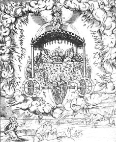
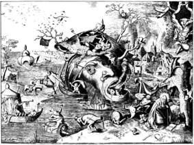

|
One encounters many instances of higher communication in the Bible. Dream interpretation is common. God speaks to men directly and also through angels and at times appears in burning bushes and whirlwinds. Prophets communicate with God. Joseph, for example, uses a silver cup like a crystal ball for divination. Miracles of a wide variety abound in the works attributed to Moses. Of particular interest is the ark of the covenant, a device through which the God of the Hebrews spoke to his people. Judaism was neither a nature religion of
the type that focused primarily on the changing of seasons and ensuring
fertility, nor was it primarily a religion of mystical union through contemplation.
There were elements of natural and mystical religion in Judaism, but it
was primarily a historical religion in which God interacted with and shaped
the destiny of the Hebrew nation.
Prophecy Nevertheless there are many instances in Judaism of prayer as an altered state of consciousness, of healing, glossolalia or speaking in tongues, revelry, fasting, retreating to the wilderness, and possibly the use of mind-altering drugs as anointing oils, as well as esoteric communities such as the Essenes and various schools of prophecy. An important branch of Jewish mysticism was based on attaining the vision of the throne of god as described in the first chapter of the Book of Ezekiel.  The Vision of Ezekiel The cabalistic tradition in Judaism is
based on the ascent of consciousness through various stages to the ultimate
vision of the throne of glory -- and beyond all vision to union with God.
The Teachings of Jesus Whether or not one is a Christian, there is little room for doubt that many persons in the ancient world have exerted a greater influence on humankind than Jesus Christ. To some extent it would be more accurate to say that we have been influenced by the myth or the story or the archetype of Jesus Christ -- for their is great dispute among scholars as to what the actual person, Jesus, taught. Yet, for almost two thousand years, each generation has sought to find wisdom in the life of Jesus Christ. In so doing, each generation has uniquely contributed to our picture of the western spiritual quest. The gospels of Matthew, Mark, Luke and John were all written several generations after the death and supposed resurrection of Jesus Christ. In the King James red letter edition which highlights those statements directly attributed to Christ, one can find a teaching of depth and wisdom which places an emphasis on love as central to the inner spiritual life. The early Christians, until the time Christianity was accepted by the Roman emperor Constantine, were strictly pacifists. The teachings of Jesus can be seen as a form of bhakti yoga -- attainment through love and devotion to a master. By stating that "the Kingdom of Heaven is within you," Jesus was, perhaps, relating spiritual salvation to the primordial traditions of psychological growth. The main message of Jesus is that of living a life of virtue, obeying certain precepts -- particularly the gentle virtues of love and kindness, the virtues of the heart. For example, when asked what the greatest of the commandments was, Jesus stated: Thou shalt love the Lord Thy God with all they heart, and with all thy soul, and with all thy mind. This is the first the great commandment. And the second is like unto it, Thou shalt love thy neighbor as thyself. On these two commandments hang all the law and the prophets.This excerpt from an apocryphal gospel of Mark quoted in a letter from an early Church father, Clement of Alexandria, provides a glimpse, independent of the bible, into the powers of spirit within the Christian context: And they came into Bethany. And a certain woman whose brother had died was there. And, coming, she prostrated herself before Jesus and says to him, "Son of David, have mercy on me." But the disciples rebuked her. And Jesus, being angered, went off with her into the garden where the tomb was, and I straightaway a great cry was heard from the tomb. And going near, Jesus rolled away stone from the door of the tomb. And straightaway, going in where the youth was, he stretched forth his hand and raised him, seizing his hand. But the youth, looking upon him, loved him I began to beseech him that he might be with him. And going out of the tomb they came into the house of the youth, for he was rich. And after six days Jesus told him what to do and in the evening the youth comes to him, wearing a linen cloth over his naked body. And he remained with him that night, for Jesus taught him the mystery of the kingdom of God.This passage suggests Jesus administered some sort of nocturnal initiation ritual, reminiscent of the Greek and Egyptian mysteries. Clement, who lived in the second century, was instrumental in integrating these pagan mysteries into the framework of a Christian spiritual life. In Christianity one finds an emphasis on the gifts of the spirit. Jesus is noted for miraculous psychic feats: healing the sick, raising the dead, walking on water, multiplying loaves and fishes. Christ encouraged his believers to accept the possibility of certain behaviors attributable to spiritual power: And these signs shall follow them that believe; In my name shall they cast out devils; they shall speak with new tongues; They shall take up serpents; and if they drink any deadly thing, it shall not hurt them; they shall lay hands on the sick, and they shall recover.One of my favorite New Testament passages is in the first epistle of Paul the apostle to the Corinthians. Here he enumerates the gifts of the spirit: For to one is given by the Spirit the word of wisdom; to another the word of knowledge by the same Spirit; To another faith by the same Spirit; to another the gifts of healing by the same Spirit; To another the working of miracles; to another prophecy; to another discerning of spirits; to another divers kinds of tongues; to another the interpretation of tongues.Paul continues to point out that the gifts of the spirit are available to all for the benefit of all, whether or not they are Christian: For as the body is one, and hath many members, and all the members of that one body, being many, are one body: so also is Christ. For by one Spirit are we all baptized into one body, whether we be Jews or Gentiles, whether we be bond or free; and have been all made to drink into one spirit.In an elegant passage, Paul then emphasizes the prime importance of Christian love which while translated as "charity" in the King James version is referred to as "love" in other versions, such as the Gideon Bible: Even though I speak in human and angelic language and have no love, I am as noisy brass or a clashing cymbal. And although I have the prophetic gift and see through every secret and through all that may be known, and have sufficient faith for the removal of mountains, but I have no love, I am nothing. And though I give all my belongings to feed the hungry and surrender my body to be burned, but I have no love, I am not in the least benefitted. There remain then, faith, hope, love, these three; but the greatest of these is love.
In his Dialogues, Gregory the Great, who was Pope of the Church from 590-604 A.D., described many marvelous wonders he had learned about Italy's saintly men either by personal experience or through trustworthy witnesses. Talking to animals, raising the dead, and stopping avalanches were all recorded phenomena in his time. St. Augustine of Hippo, who died in 430 A.D., claimed to attain his knowledge through a series of contemplative glimpses of supramundane reality which set the tone of Christian mysticism since his time: My mind withdrew its thoughts from experience, extracting itself from the contradictory throng of sensuous images, that it might find out what light was wherein it was bathed. And thus with the flash on one hurried glance, it attained to the vision of That Which Is. And then at last I saw Thy invisible things understood by means of the things that are made, but I could not sustain my gaze: my weakness was dashed back, and I was relegated to my ordinary experience, bearing with me only a loving memory, and as it were the fragrance of those desirable meats on which as yet I was not able to feed.The early saints of the church achieved their status through popular veneration. However, by the thirteenth century, within the Roman Catholic Church, the sole right to cannonize was reserved to the papacy. It was accepted that recognition of a person as a saint required convincing evidence of the holiness of his or her life and of miracles obtained through the saint's intercession before god. In Catholic theology, the saint does not himself or herself work miracles or answer prayers. Miracles are said to be the work of god and the saint intercedes with god to grant the petitions of the faithful. The modern process of cannonization takes
the form of a law suit, in which the pope is the final judge. The case
for the candidate is presented by the "postulator" and it is the duty of
the "promoter of the faith," popularly known as "the Devil's Advocate,"
to draw attention to weak points in the case. Two (ower ranks than saints
have been instituted, those of "venerable" and "blessed."
The Monastic Tradition The early Christian monastics, particularly in Egypt, practiced a number of austerities such as fasting, solitude, self-mortification, celibacy, sitting on poles, sleep-deprivation, etc. Theirs was a mystical philosophy of the inner vision of Christ, and often many varieties of demons came to tempt them from the purity of their path.  The Vision of St. Anthony Mystics such as St. Anthony, when confronted by tormenting demons, recognized them as intangible thoughtforms who could not do harm (similar to the teachings of the Tibetan Book of the Dead). The desert became so crowded with solitary monks that they founded their own communities. These monastaries were a mystical source of the power of the Church for many centuries. In fact, it was this practice of holy penitence
that eventually led to the penitentiaries of our "modern" penal system.
The first institutions of this sort were operated by the Catholic Church
in Europe and by the Quakers in the United States.
References . Violet MacDermot, The Cult of the Seer in the Ancient Middle East. Berkeley: University of California Press, 1971. An entertaining and most thorough scholarly examination. . Charles Ponce, Kabbalah. San Francisco: Straight Arrow, 1973, p. 35. This book is most valuable for its integration of many Hebrew and Christian systems. . Matthew 22:37-40. . Morton Smith, Clement of Alexandria and a Secret Gospel of Mark. Cambridge, MA: Harvard University Press, 1972, p. 357. . Mark 16:17-18. . I Corinthians 12:8-10. . I Corinthians 12:12-13. . I Corinthians 13:1-3. . I Corinthians 13:8-10. . I Corinthians 13:13. . I Corinthians 14:1. . Evelyn Underhill, Mysticism. New York: E. P. Dutton, 1961, p. 331. Augustine here is quoted in a volume first published in 1911 which still remains the authoritative analysis of mysticism in western culture. The source is given as St. Augustine, Book vii, cap. xvu. . Violet MacDermot, op. cit. |